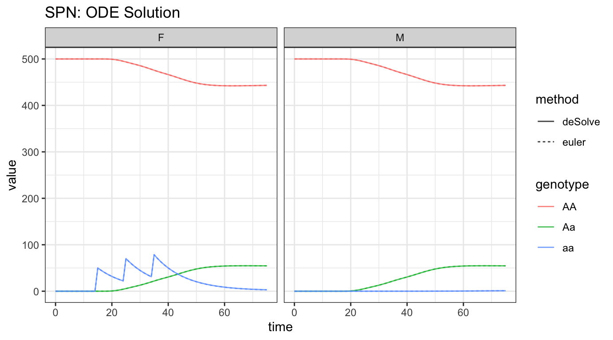

advanced_topics.RmdThe internal MGDrivE2 code relies on “step functions” (not to be confused with the mathematical function \(\Theta(x)\)) which are responsible for taking an input state (marking, \(X_{0}\)) and updating over some time step \(\Delta t\) from \(t_{0}\) to \(t_{0}+\Delta t\). Internally, the wrapper function sim_trajectory_R() calls sim_trajectory_base_R(), which is an adapter for any valid step function. sim_trajectory_base_R() is responsible for recording output at requested times by the user, as well as firing release events, and anything else exogenous to the internal dynamics of the system. The step function then, describes how to sample a trajectory from a valid Petri Net model. This flexibility, gained by decoupling the conceptual model, expressed as a Petri Net, from the numerical methods sampling trajectories, allows a variety of deterministic and stochastic methods to be used interchangeably in MGDrivE2.
It is our hope that future development and users will be interested in improving these numerical methods. Therefore, we provide a detailed example showing how to write a new step function. Because we are interested in describing how to interface with the internal MGDrivE2 API, rather than describing a specific method, we use use a simple Euler method for our example.
The function (factory) is below. It takes two arguments as input. pn is a named list with two elements, the stoichiometry matrix S and the “hazard” vector h, needed to update the state over the time step. Hazard is quoted because, when interpreting the model as describing a set of ODEs, these should be referred to as deterministic rate functions, rather than hazard functions, which have a specific stochastic interpretation. However, we will refer to these as hazard functions with apologies to the pedantic.
All of the work is done in the returned function object. x is the state vector which will be updated and returned. termt is the right endpoint of the time step, at \(t_{0}+\Delta t\). Until we reach the termination point, the state is updated as a standard Euler scheme, with each internal step of size dt. When the step function returns, note that it returns a named list with the first element x, and second named element NULL. That is for compatibility with the internal simulation functions which allow users to track additional output besides the state vector.
step_Euler <- function(pn, dt = 0.01) {
stopifnot(all(names(pn) %in% c("S","h")))
return(
function(x0, t0, deltat){
x = x0
tNow = t0
termt = t0 + deltat
repeat {
h = pn$h(x, tNow)
if(any(h > 1e6)){
stop("rates too large, terminating simulation.\n\ttry reducing dt")
}
dx = pn$S %*% (h*dt)
x = x + as.vector(dx)
x[x<0] <- 0 # "absorption" at 0
tNow = tNow+dt
if(tNow > termt){
return(list("x"=x,"o"=NULL))
}
}
}
)
}The function step_Euler() implements this first-order explicit Euler scheme just described. All step functions are required to take the three named arguments x0, t0, and deltat, giving the state at the beginning of the time step, the initial time, and the size of the time step, and must return the updated state vector when that time step is over. To test this function, we will setup a simple one-node, lifecycle simulation, given in the “MGDrivE2: One Node Lifecycle Dynamics” vignette.
Because this vignette covers advanced topics it assumes familiarity with MGDrivE2 and the setup for the one node simulation is given with few comments.
We start by loading the MGDrivE2 package, as well as the MGDrivE package for access to inheritance cubes and ggplot2 for graphical analysis. We will use the basic cube to simulate Mendelian inheritance for this example.
# simulation functions
library(MGDrivE2)
#> Loading MGDrivE2: Mosquito Gene Drive Explorer Version 2
# inheritance patterns
library(MGDrivE)
#> Loading MGDrivE: Mosquito Gene Drive Explorer
# plotting
library(ggplot2)
# basic inheritance pattern
cube <- MGDrivE::cubeMendelian()These are the same parameters as in the “MGDrivE2: One Node Lifecycle Dynamics” vignette.
# lifecycle equilibrium and initial conditions
init <- equilibrium_lifeycle(params = theta, NF = NF, spn_P=SPN_P, cube = cube)
# approximate hazards for continous approximation
approx_hazards <- spn_hazards(spn_P = SPN_P, spn_T = SPN_T, cube = cube,
params = init$params, exact = FALSE, tol = 1e-8,
verbose = FALSE)We will use the release scheme from the one-node vignette for both of our simulations.
# releases
r_times <- seq(from = 25, length.out = 5, by = 10)
r_size <- 50
events <- data.frame("var" = paste0("F_", cube$releaseType, "_", cube$wildType),
"time" = r_times,
"value" = r_size,
"method" = "add",
stringsAsFactors = FALSE)At this point the simulation is almost ready. We will use the internal MGDrivE2 API to run our custom Euler step function. We will write a function evaluate_haz() that evaluates all of the hazard functions at the given time and state using vapply for speed. Because we are providing a non-standard step function, we have to call the base setup functions from the package, instead of the nice sim_trajectory_R() wrapper.
# function to evaluate
evaluate_haz <- function(M,t){vapply(X = approx_hazards$hazards,
FUN = function(h){h(t=t, M=M)},
FUN.VALUE = numeric(1), USE.NAMES = FALSE) }
# step function for hazard evaluation
Euler_stepper <- step_Euler(pn = list(S=S, h=evaluate_haz), dt = 0.1)
# checks for simulation time and events
sim_times <- MGDrivE2:::base_time(t0 = 0, tt = tmax, dt = dt)
events <- MGDrivE2:::base_events(x0 = init$M0, events = events, dt = dt)
# fum simulation
euler_out <- MGDrivE2:::sim_trajectory_base_R(x0 = init$M0, times = sim_times,
dt = dt, num_reps = 1,
stepFun = Euler_stepper,
events = events, verbose = FALSE)
# summarize female/male
euler_female_out <- summarize_females(out = euler_out$state,spn_P = SPN_P)
euler_male_out <- summarize_males(out = euler_out$state)
euler_fm_out <- rbind(cbind(euler_female_out,"sex" = "F"),
cbind(euler_male_out, "sex" = "M"))For comparison, we use the default ODE method in MGDrivE2. These are numerical integration routines provided by the deSolve package.
# run deterministic simulation
ODE_out <- sim_trajectory_R(x0 = init$M0, t0 = 0, tt = tmax, dt = dt, S = S,
hazards = approx_hazards, sampler = "ode",
events = events, verbose = FALSE)
# summarize females/males
ODE_female_out <- summarize_females(out = ODE_out$state, spn_P = SPN_P)
ODE_male_out <- summarize_males(out = ODE_out$state)
ODE_fm_out <- rbind(cbind(ODE_female_out,"sex" = "F"),
cbind(ODE_male_out, "sex" = "M"))# add method for plotting
euler_fm_out$method <- "euler"
ODE_fm_out$method <- "deSolve"
# plot adults
ggplot(data = rbind(euler_fm_out, ODE_fm_out)) +
geom_line(aes(x = time, y = value, color = genotype, linetype = method),
alpha=0.75) +
facet_wrap(facets = vars(sex), scales = "fixed") +
theme_bw() +
ggtitle("SPN: ODE Solution")
Because this is a relatively “easy” problem for numerical routines, the lines are more or less exactly on top of each other. This is not going to be true in general, especially for time varying parameters or stiff systems.